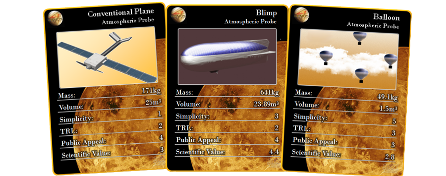
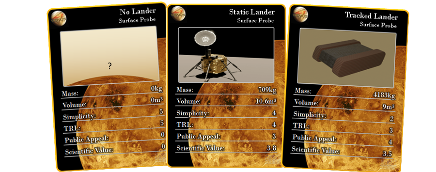

Concept Stage
Mission to Venus Progress
15/12/2021
The process for concept generation started with ideas for overcoming the main technical issues of heat and extended lifespan, so that we could get as many creative ideas as possible for keeping the instruments needed operational. From these we used the payload power, volume, and mass to size the vehicles for feasibility and comparison, then examined combinations of concepts from each area of operation for feasibility and effectiveness.
These are the very initial concepts we came up with. There were impact probes to collect atmospheric data and provide seismic data; a mesh network to ensure data could always be uploaded from the aerial and landed vehicles; and rovers with tank tracks to move the weight of the equipment, cooling system and power over loose terrain. There were a few notable themes throughout the board: Buoyant aircraft, nuclear power, and redundant vehicles were common, and for good reason. The buoyant aircraft gave a failsafe in the case of a power failure, nuclear power is the most reliable long-term, and redundant vehicles reduce the chance of loss of mission in many cases of unexpected failure. One of our main outcomes from our QFD was that we needed to operate effectively in all of the regions. So while an interesting concept, they don’t provide a lot of data from the atmosphere during its lifetime and so were left out.
Some interesting concepts that didn’t make the cut were a mechanical rover, legged rovers, and a claw for aerial collection of surface samples. A purely mechanical rover, which would be easy to design with tolerant materials, was limited in power availability and is only compatible with basic instruments such as temperature and pressure probes. Legged rovers, in the manner of what Boston Dynamics might work on, are considered concepts for Martian and Lunar exploration due to their speed on rough terrain. They unfortunately have a lot of mechanical and processing complexity incompatible with the environment and high temperature electronics. The Claw would be attached to an aerial vehicle and completely avoids the difficulty of keeping a lander on the surface, but came out to be far too massive to attach to any atmospheric vehicle.
To compare each idea, we primarily used the metrics on these cards to look at the usefulness of each probe. All scores except the mass and volume are 1-5 ratings, and scientific value is a combined score from qualities such as reliability, endurance and diversity of data captured by each probe. For the orbital vehicle, these were the results of the calculations. The triple orbiter used extra satellites to increase coverage, and the mesh system spread the instruments out between 32 satellites so that continuous global coverage could be achieved with a lower mass penalty. However, there have been no attempts and few designs for making a mesh network outside of Earth’s sphere of influence, so this has been rated low for Technology Readiness Level.
All the atmospheric probes are new for vehicles coming in from outside the atmosphere, and so have a low TRL score. Without buoyancy, the conventional plane has no fail-safe mode, and many moving parts due to needing to fold which gave penalties to its scientific value and mechanical simplicity score but has a decently low mass. The balloon is very light and simple with no means for lateral control, but misses out entirely on scientific objective 3 due to low payload capacity, giving it also a low scientific value score. The blimp has lateral and vertical control, and scaled well to take the full instrument suite but was by far the heaviest concept.
For the landers, we looked at a static and tracked rover, as well as not having a lander at all to see if it was necessary. Both the landers use conventional electronics and instruments which reside in a pressure vessel and are kept cool for the length of their missions via a Stirling cooler. With lower power requirements, the static lander uses a Stirling generator for power, whereas the tracked lander needed a nuclear reactor. They both used the full instrument suite, but the mobility of the tracked lander actually gave it a lower scientific value score due to its poor estimated reliability, and the panelling of the sides and tracks added significant weight.
